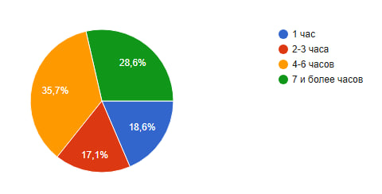
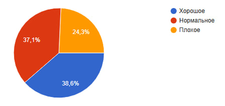

Добро пожаловать!
Этот сайт создан, чтобы рассказать правду о том, как смартфоны, планшеты и компьютеры влияют на зрение школьников. Основано на реальном опросе среди 70 учеников 5–11 классов нашей школы.
Здесь вы найдёте:
- Научные факты о синем свете и усталости глаз
- Результаты нашего исследования
- Простые правила, которые помогут сохранить зрение
Как гаджеты вредят зрению?
Современные экраны излучают синий свет (400–450 нм), который проникает в сетчатку глаза. У подростков хрусталик более прозрачен, поэтому воздействие сильнее.
-
• Цифровое зрительное утомление: сухость, жжение, головные боли
• Моргание в 2–3 раза реже → глаза пересыхают
• Нарушение сна из-за подавления мелатонина
• Развитие близорукости при длительной работе на близком расстоянии
Результаты опроса (70 учеников)
 • 64% проводят за экранами 4 и более часов в день
• 61% жалуются на боль в глазах
• Только 51% знают правила цифровой гигиены зрения
Связь времени и состояния зрения:
- При использовании >6 часов/день — проблемы со зрением у ~94%
- При использовании 1–3 часа/день — проблемы у ~26%
→ Гипотеза подтверждена: чем больше времени за экраном, тем выше риск ухудшения зрения.
Как защитить своё зрение?
Правило 20-20-20
Каждые 20 минут смотри 20 секунд на объект в 6 метрах.
Расстояние
Смартфон — 30–40 см, компьютер — 50–70 см.
Ночной режим
Вечером включи тёплый фильтр или «ночной свет».
Питание
Ешь морковь, шпинат, рыбу, ягоды — они полезны для глаз.
О проекте
Автор: Иван Киселев, ученик 10 "А" класса
Школа: МАОУ СОШ №26, г. Тюмень
Год: 2026
Цель проекта — повысить осведомлённость о влиянии гаджетов на зрение и предложить простые способы защиты.